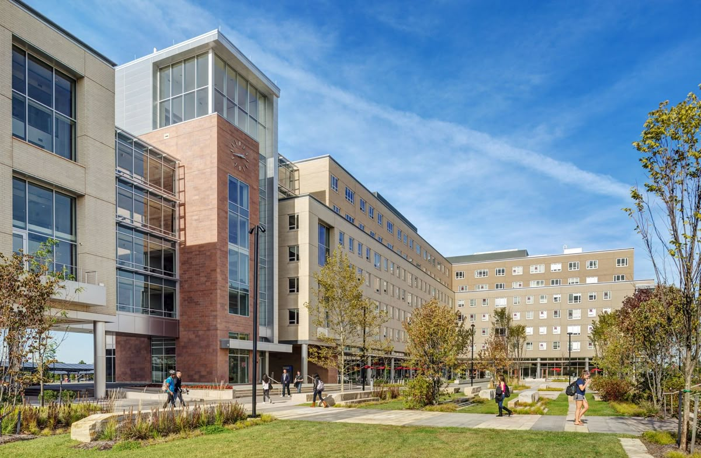

Profil Singkat
Universitas Handayani adalah institusi pendidikan tinggi yang berkomitmen untuk mencetak generasi unggul, kreatif, dan berdaya saing global. Berdiri sejak tahun 1995 di Makassar, kampus ini terus tumbuh menjadi pusat inovasi dan teknologi.

Visi & Misi
- Visi: Menjadi universitas unggul dalam pengembangan teknologi dan kewirausahaan di tingkat nasional dan internasional.
-
Misi:
- Menyelenggarakan pendidikan berkualitas berbasis teknologi.
- Menghasilkan lulusan yang profesional dan kompeten.
- Mendorong riset dan inovasi untuk kemajuan masyarakat.
- Menjalin kemitraan strategis dengan dunia industri dan global.
Kenapa Memilih Universitas Handayani?
Dengan tenaga pengajar profesional, kurikulum modern, fasilitas lengkap, dan lingkungan akademik yang kondusif, Universitas Handayani menjadi pilihan tepat untuk membangun masa depan yang gemilang.